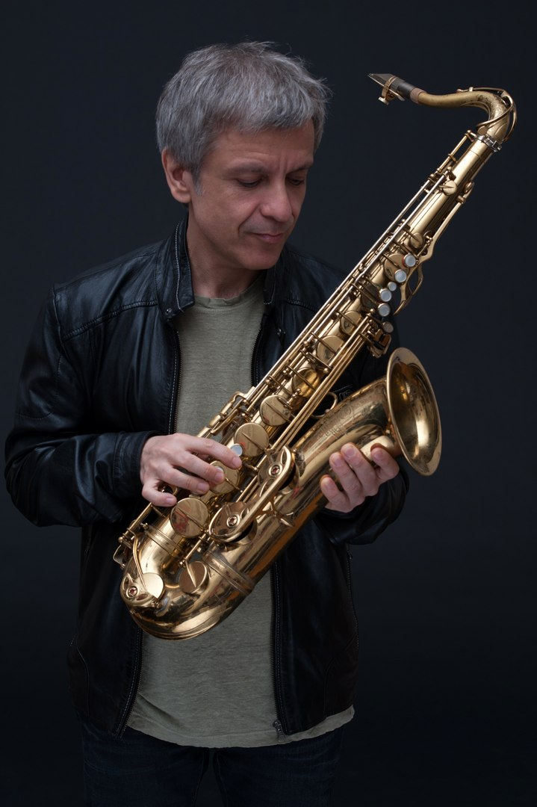
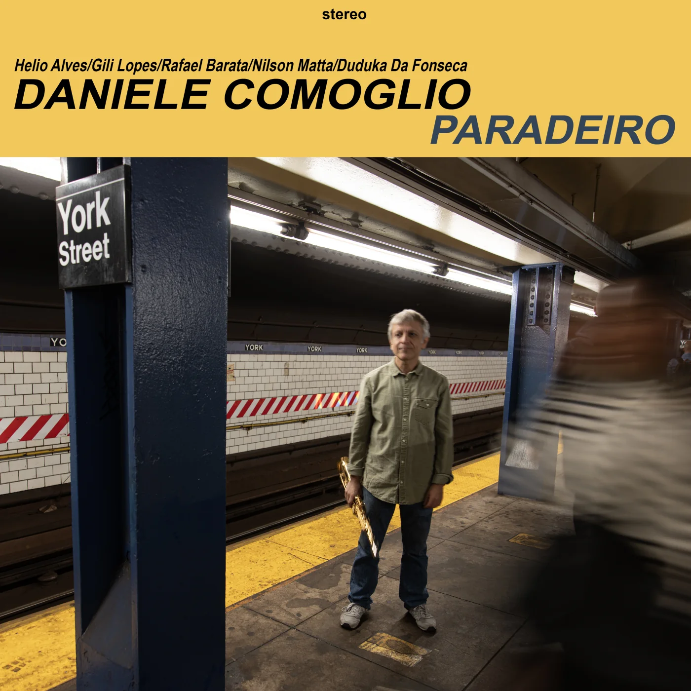

Saxophonist, session player, teacher
Daniele Comoglio
Eclectic musician, active for over three decades on the Italian scene, with collaborations across jazz, pop and orchestral music.
NEW ALBUM "PARADEIRO" WAS RELEASED IN APRIL 2025.
Biography
About Daniele
Daniele Comoglio is an Italian saxophonist, composer and educator based in Milan. He graduated with top marks at Conservatorio G. Rossini in Pesaro and has built a career spanning jazz, pop, television and orchestral productions.
Over the years he collaborated with major artists including Adriano Celentano, Renato Zero, Raf, Fabio Concato, Jovanotti, Elio e le Storie Tese, Tony Hadley, Gino Paoli and many others. He is currently professor of saxophone at Conservatorio G. Verdi in Milan.
With Paradeiro, he deepens his long-standing connection with Brazilian music and opens a new artistic chapter focused on rhythm, melody and contemporary jazz writing.

Discography Highlight
Paradeiro (2025)
Recorded between Prato and New York with two Brazilian quartets, the album mixes contemporary jazz language with samba, baiao, bossa nova and afoxe influences.
Lineup
- Daniele Comoglio - tenor and soprano saxophones
- Helio Alves - piano
- Gili Lopes / Nilson Matta - bass
- Rafael Barata / Duduka Da Fonseca - drums
Tracklist
- Molecada
- Depois Da Chuva
- Molho Con Pimenta
- Julye
- Retrato Em Branco E Preto
- Paradeiro
- Flores e Rimas
- Paraty
- Dona Maria
Dreaming In Colour (2002)
Paradeiro Live Moments
Press Quotes
Reviews On Paradeiro
"Paradeiro is much more than a simple album; it is a journey, a reflection and an invocation of the divinity of music." Francesco Cataldo Verrina, Doppio Jazz
"A collection of themes and melodies confirming the natural and endless fascination between jazz and Brazilian music." Elio Bussino, Rockerilla
"There are records you do not just listen to, you live them. Paradeiro by Daniele Comoglio is one of them." Luca Redapolis, Redapolis Music Blog
Full reviews: Doppio Jazz, Kathodik, Redapolis, Jazz Convention, Spettakolo


Media
Video Selection
MOLECADA
JULYE
No Ceu No Mar Na Terra
Back To My Soul
Black Velvet
Blues Connotation
Tour Dates
Live Schedule
Older dates are now archived. Upcoming concert dates are powered by Bandsintown so they can be managed independently.
Bandintown Integration ReadySaxophone Recording
Session Recording
Daniele is available as studio saxophonist for albums, singles, film music and remote recording sessions. The recording workflow can be adapted to the production style, from section writing and overdubs to complete solo arrangements.
Sessions can be delivered as stems, edited comp takes or complete arrangement layers, based on production needs.
Recording Requests And Contacts
Book A Session Or Send A Message
Use the form below for studio sessions, arrangements, remote recording requests, or general enquiries. We open your email client with prefilled content so you can send your message immediately.
Direct email: info@danielecomoglio.com